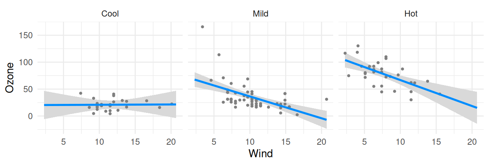
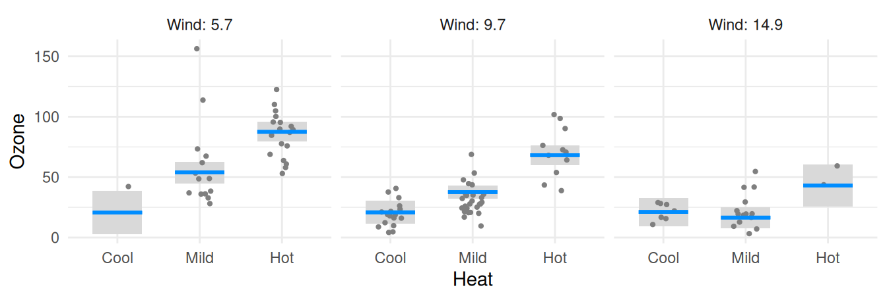
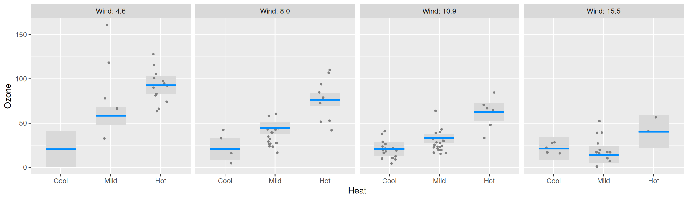
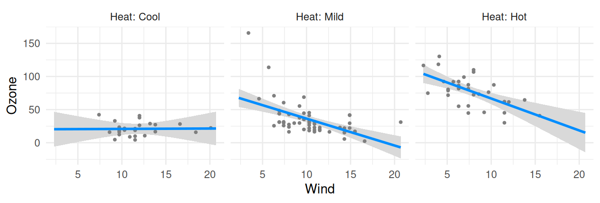
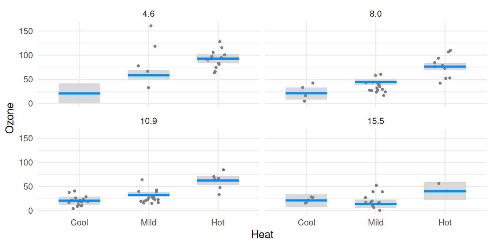

As was the case with nonlinear terms, the relationship between x and y in a model with interactions also (typically) depends on multiple coefficients and thus, a visual summary tends to be much more readily understood than a numeric one.
For models with interactions, we must simultaneously visualize the effect of two explanatory variables. The visreg package offers two methods for doing so; this page describes what we call cross-sectional plots, which plot one-dimensional relationships between the response and one predictor for several values of another predictor, either in separate panels or overlaid on top of one another. The package also provides methods for constructing surface plots, which attempt to provide a picture of the regression surface over both dimensions simultaneously.
Let’s fit a model that involves an interaction between a continuous term and a categorical term:
We can then use visreg to see how the effect of wind on ozone differs depending on the temperature:
visreg(fit, "Wind", by = "Heat")
Or alternatively, see how the effect of temperature depends on the wind level:
visreg(fit, "Heat", by = "Wind")
Note that, since Wind is a continuous variable, the panels above are somewhat arbitrary. By default, visreg sets up three panels using the 10th, 50th, and 90th percentiles, but the user can change both the number and the location of these break points.
In all of these plots, note that each partial residuals appears exactly once in the plot, in the panel it is closest to.
Options
For a numeric by variable, the breaks argument controls the values at which the cross-sections are taken. By default, cross-sections are taken at three quantiles (10th, 50th, and 90th), but a larger number can be specified:
visreg(fit, "Heat", by = "Wind", breaks = 4)
If breaks is a vector of numbers, it specifies the values at which the cross-sections are to be taken:
Strip names
visreg sets up the facet strips internally via the strip_names option:
visreg(fit, "Wind", by = "Heat", strip_names = TRUE)
You can also explicitly specify the labels for each strip:
Other aspects of faceting, such as the number of rows/columns, can be changed by adding a new facet_wrap() (or facet_grid()) to the returned plot:
visreg(fit, "Heat", by = "Wind", breaks = 4) + facet_wrap(~Wind, nrow = 2)